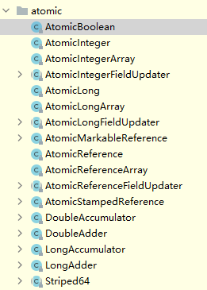
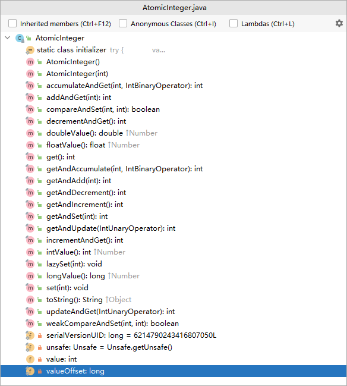

Atomic
在并发编程中很容易出现并发安全的问题，有一个很简单的例子就是多线程更新变量i=1,比如多个线程执行i++操作，就有可能获取不到正确的值，而这个问题，最常用的方法是通过 Synchronized进行控制来达到线程安全的目的。但是由于synchronized是采用的是悲观锁策略，并不是特别高效的一种解决方案。实际上，在JUC下的atomic包提供了一系列的操作简单， 性能高效，并能保证线程安全的类去更新基本类型变量，数组元素，引用类型以及更新对象中的字段类型。atomic包下的这些类都采用的是乐观锁策略去原子更新数据，在java中则是使用CAS操作具体实现。
在java.util.concurrent.atomic包里提供了一组原子操作类：

- 基本类型：
AtomicInteger、AtomicLong、AtomicBoolean； - 引用类型：
AtomicReference、AtomicStampedRerence、AtomicMarkableReference； - 数组类型：
AtomicIntegerArray、AtomicLongArray、AtomicReferenceArray - 对象属性原子修改器：
AtomicIntegerFieldUpdater、AtomicLongFieldUpdater、AtomicReferenceFieldUpdater - 原子类型累加器（
jdk1.8增加的类）：DoubleAccumulator、DoubleAdder、LongAccumulator、LongAdder、Striped64
原子更新基本类型

以原子方式将实例原值加1，返回自增前的原值
getAndAccumulate(int x, IntBinaryOperator accumulatorFunction)
将实例中的值更新为新值，并返回旧值
getAndSet(int newValue)
以原子的方式将实例中的原值进行加1操作，并返回相加后的结果
incrementAndGet()
以原子方式将输入的数值与实例中原本的值相加，并返回最后的结果
addAndGet(int delta)
总结，可以看到方法的命名规则还是比较容易理解的，根据方法中先获取还是先累加，先获取就获取的是原值，后获取返回的则是操作后的值。
原子更新数组类型
以原子更新的方式将数组中索引为i的元素与输入值相加
addAndGet(int i, int delta)
以原子更新的方式将数组中索引为i的元素自增加1
getAndIncrement(int i)
将数组中索引为i的位置的元素进行更新
compareAndSet(int i, int expect, int update)
原子更新引用类型
AtomicReference作用是对普通对象的封装，它可以保证你在修改对象引用时的线程安全性。
对象属性原子修改器
AtomicIntegerFieldUpdater可以线程安全地更新对象中的整型变量。
对于AtomicIntegerFieldUpdater 的使用稍微有一些限制和约束，约束如下：
- 字段必须是volatile类型的，在线程之间共享变量时保证立即可见.
eg:volatile int value = 3 - 字段的描述类型（修饰符public/protected/default/private）与调用者与操作对象字段的 关系一致。也就是说调用者能够直接操作对象字段，那么就可以反射进行原子操作。但是对于父 类的字段，子类是不能直接操作的，尽管子类可以访问父类的字段。
- 只能是实例变量，不能是类变量，也就是说不能加static关键字。
- 只能是可修改变量，不能使final变量，因为final的语义就是不可修改。实际上final的语义和 volatile是有冲突的，这两个关键字不能同时存在。
- 对于
AtomicIntegerFieldUpdater和AtomicLongFieldUpdater只能修改int/long类型的字 段，不能修改其包装类型（Integer/Long）。如果要修改包装类型就需要使用AtomicReferenceFieldUpdater。

...
...
Copyright 2021 sunfy.top ALL Rights Reserved